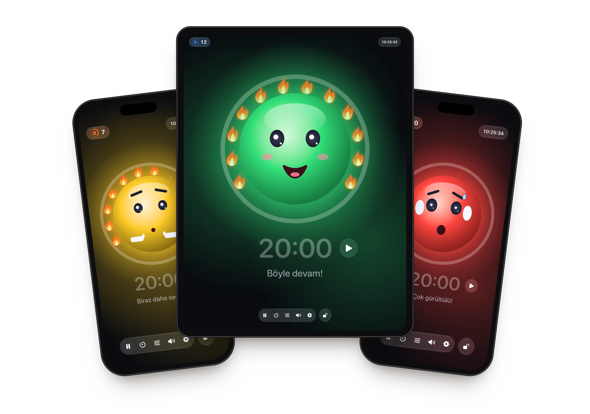
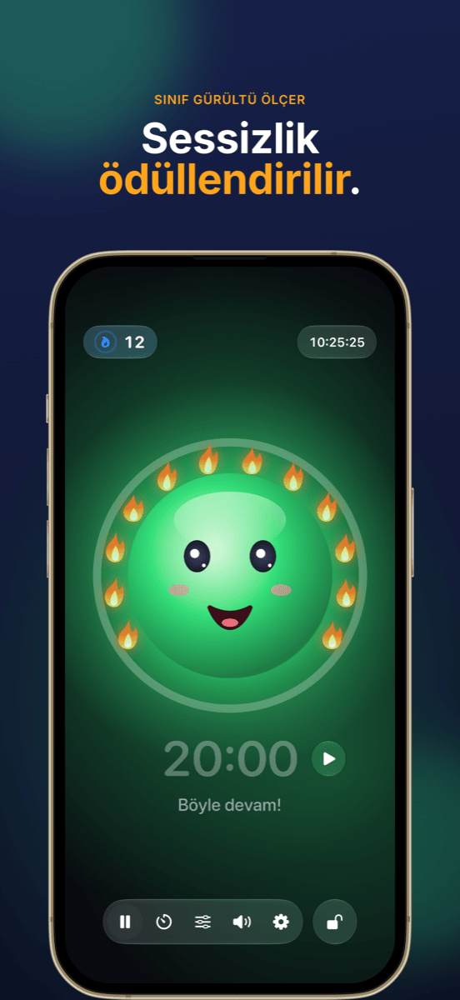
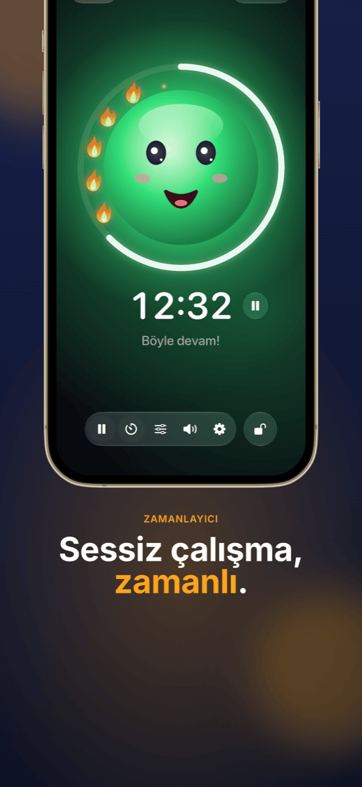
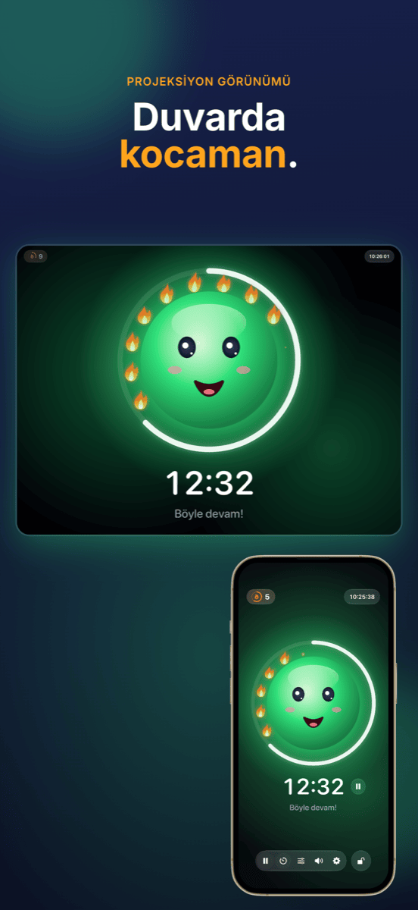
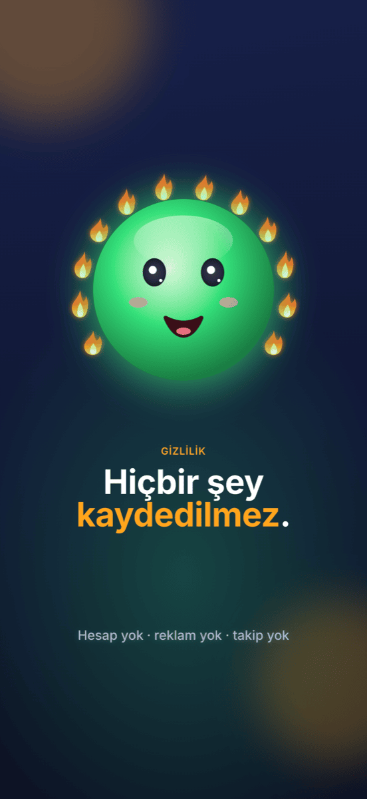

Ruhe
Sınıf için sevimli gürültü ışığı: sessiz çalışmak alev kazandırır – gürültü asla cezalandırılmaz.






Özellikler
Maskotlu gürültü ışığı
Yeşil, sarı, kırmızı – neşeli bir yüz sınıfın ne kadar gürültülü olduğunu gösterir. Sarıda usulca “şşş” der, kırmızıda kulaklarını kapatır.
Ceza yerine alevler
Sessizlik sürdükçe alevler birer birer yanar. On iki alev tam bir çelenk oluşturur ve bu kutlanır. Ses çok yükselirse alevler söner.
Zamanlayıcı gözünün önünde
Maskotun etrafındaki halka kalan süreyi gösterir. Başlat ve durdur hemen sürenin yanında; süre bitince ölçüm duraklar.
Projeksiyon görünümü
Projeksiyonda veya ikinci bir ekranda gürültü ışığı tam ekran görünür – kontroller iPad’inde kalır.
Her sınıfa uygun
Sarının ve kırmızının ne zaman başlayacağını iki sürgüyle ayarlarsın – ya da Ruhe 5 saniye dinleyip kendini ayarlar.
Kontrolleri kilitle
Face ID veya parolayla kilitlenir, böylece sınıftan kimse bir şey değiştiremez.
Nasıl çalışır
iPad’i yerleştir
Ruhe’yi aç ve yüze dokun – ölçüm başlar.
Sınıfı çalıştır
Maskot sınıfa ne kadar gürültü olduğunu gösterir ve her sessiz an için alev toplar.
Başarıyı gör
Dersin sonunda önemli olan, işe yarayandır: alev çelengi.
Rehber
Yardım ve destek
Ruhe hiçbir şey ölçmüyor – ne yapmalıyım?
Ruhe’nin mikrofona erişmesi gerekir. Ayarlar → Gizlilik ve Güvenlik → Mikrofon → Ruhe bölümünden izin ver.
Işık çok erken ya da çok geç kırmızıya dönüyor.
Araç çubuğundaki sürgü simgesine dokun ve sarı ile kırmızı eşiklerini kaydır – ya da sınıf normal çalışırken “Otomatik ayarla”yı kullan.
Ruhe’yi projeksiyonda nasıl gösteririm?
iPad’i kabloyla veya AirPlay ile projeksiyona bağla. Ruhe orada gürültü ışığını otomatik olarak tam ekran gösterir, kontroller iPad’de kalır.
Alevleri nasıl sıfırlarım?
Sol üstteki alev sayacına dokun. Orada alevleri düzeltebilir ya da hepsini 0’a ayarlayabilirsin. Ruhe 10 dakikadan uzun süre arka planda kaldıysa sonraki ders zaten 0’dan başlar.
Bir şey kaydediliyor mu?
Hayır. Ruhe yalnızca ses düzeyini ölçer – hiçbir şey kaydedilmez, saklanmaz veya gönderilmez. Ayrıntılar gizlilik politikasında.
Sorun burada yok mu?
info@crabucate.de adresine yaz – genellikle bir iki gün içinde yanıt veririm.
İyi hissettiren sessizlik.
iPad ve iPhone için – şimdi App Store’da.